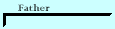

Histories
Genealogy and family history information for the familyHome
Histories - - >
Charts
Photos
Maps
Restricted
News
Info
Contact
John Buchanan . John Buchanan descendants
History of Archibald W. O. Buchanan and timeline
born 9 Feb. 1830, Lexington, Fayette, Kentucky
 Nancy Ann Bache - Bach Histories
Nancy Ann Bache - Bach Histories
<>Archie Earl Buchanan - History and stories(requires login).
 Hans Sorensen (1825-1893) Download as a PDF document (caution: over 12 megabytes).
Hans Sorensen (1825-1893) Download as a PDF document (caution: over 12 megabytes).  born 2 Oct. 1825, Kragerup, Orslev, Holbaek, Denmark
born 2 Oct. 1825, Kragerup, Orslev, Holbaek, Denmark
 Caroline Sophia Sorenson(1858-1928)
Caroline Sophia Sorenson(1858-1928)
born 30 Apr 1858, Torpegavn, Holbaek, Denmark
 Ane Nielsen (1822-1903)born 24 Dec. 1822, Munke-Bjaergby, Soro, Denmark
Ane Nielsen (1822-1903)born 24 Dec. 1822, Munke-Bjaergby, Soro, Denmark
John Johnson Davies
Henry William Davis(1862-1936)
born 20 Jul 1862, North Ogden, Weber, Utah
Rachel Maria Davies (1833-1869)born 15 Apr. 1833, Carmarthen, Wales
<>Florene Davis -
Lorenzo Wesley Roundy (1819-1876)born 18 June 1819, Spafford, Onondago, New YorkAnnie Isadore Roundy (1867-1949) - Sketch of the Life of Annie Isadore Roundy Davies
born 1 Jun 1867, Kanarraville, Iron, Utah.
Priscilla Parrish (1833-1915)(note: Her name is sometimes spelled Prisella.)born 20 Mar. 1833, Elizabeth, Leeds, Ontario, Canada
Forrest Buchanan History(requires login).
Mrs. Smart Learns to Skate (a story that used to be told at Buchanan family reunions).